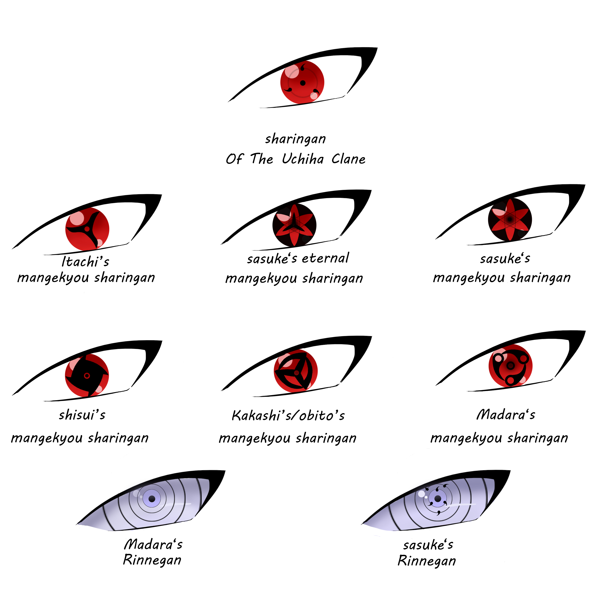

The Sharingan is the unique dojutsu, or eye technique, of the Uchiha Clan. It is one of the most powerful Kekkei Genkai in the ninja world and is passed down through the Uchiha bloodline. The Sharingan usually awakens when an Uchiha experiences strong emotions such as love, loss, determination, or grief.
The Sharingan originated from Indra Otsutsuki, the elder son of Hagoromo Otsutsuki, also known as the Sage of Six Paths. Through generations, this powerful eye ability was inherited by members of the Uchiha Clan, making them famous throughout the ninja world.
When activated, the user's eyes turn red and develop black comma-shaped marks called tomoe. As the Sharingan grows stronger, the number of tomoe increases, allowing the user to access more advanced abilities.
The Sharingan grants several powerful abilities. It enhances vision, allowing the user to track fast movements and predict an opponent's actions. It can also observe chakra flow, making it easier to understand enemy techniques.
One of the Sharingan's most famous abilities is copying techniques. By carefully observing an opponent, a Sharingan user can learn and replicate many jutsu. The eye is also highly effective for casting and resisting genjutsu.
The Mangekyo Sharingan is an advanced form of the Sharingan. It is awakened after experiencing intense emotional pain, usually related to the loss of someone important. Each user gains unique abilities depending on their individual Mangekyo Sharingan.
For example, Itachi Uchiha gained the abilities Tsukuyomi and Amaterasu, while Obito Uchiha awakened Kamui. These techniques are among the most powerful abilities in the Naruto universe.
Continuous use of the Mangekyo Sharingan gradually damages the user's eyesight. To overcome this weakness, an Uchiha can obtain the Eternal Mangekyo Sharingan by transplanting the Mangekyo Sharingan of a close relative. This removes the risk of blindness and greatly increases the user's power.
In rare circumstances, the Sharingan can evolve further into the Rinnegan. This legendary dojutsu grants extraordinary abilities, including mastery over powerful techniques and control of the Six Paths powers. Madara Uchiha was one of the few individuals to awaken the Rinnegan.

Many legendary members of the Uchiha Clan possessed the Sharingan. These include Madara Uchiha, Itachi Uchiha, Sasuke Uchiha, Obito Uchiha, and Shisui Uchiha. Each of them used the Sharingan in unique ways and contributed to its legendary reputation.
The Sharingan is more than just a powerful eye technique. It represents the history, strength, and legacy of the Uchiha Clan. Its unique abilities and many evolutions have made it one of the most iconic powers in anime history.